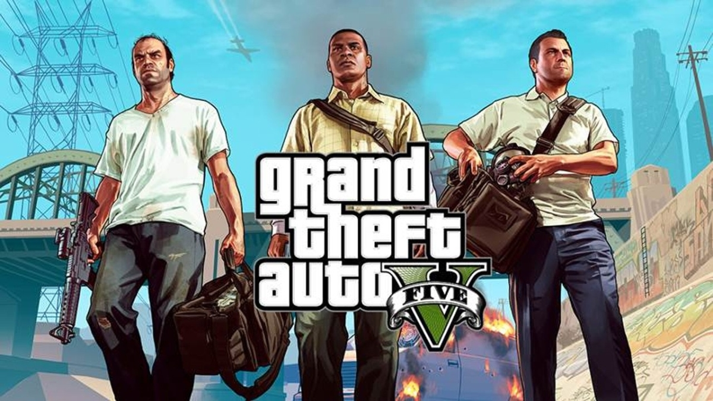
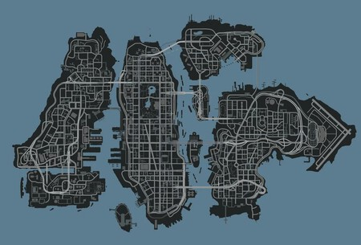
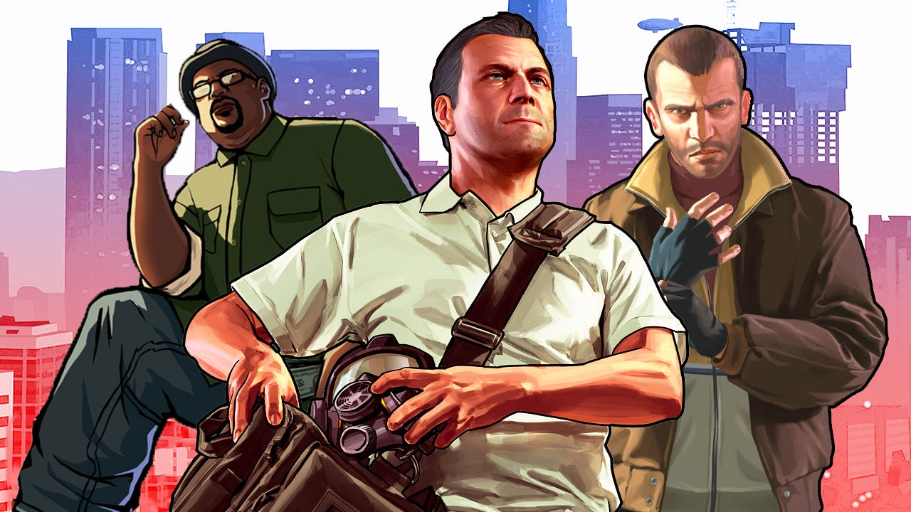
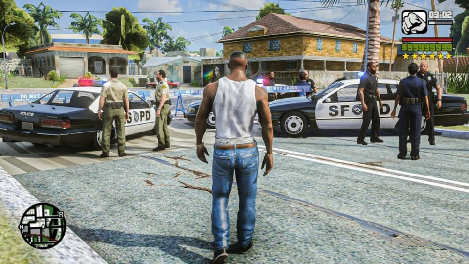

Grand Theft Auto (GTA) de Rockstar Games

Desde su inauguración en 1997, Grand Theft Auto (GTA) de Rockstar Games ha redefinido el género de los videojuegos de mundo abierto, ofreciendo a los jugadores una experiencia inigualable de crimen, acción y libertad en un entorno virtual expansivo. La serie ha evolucionado constantemente, estableciendo nuevos estándares en cuanto a narrativa, jugabilidad y atención al detalle.
Mundos Abiertos sin Fronteras
La esencia de GTA radica en sus mundos abiertos, donde los jugadores pueden explorar ciudades vibrantes y vastos paisajes con total libertad. Desde las calles caóticas de Liberty City hasta los soleados paisajes de Los Santos, cada entrega presenta un entorno único lleno de detalles asombrosos. Los jugadores pueden sumergirse en la vida de la ciudad, participar en misiones épicas o simplemente disfrutar de la exploración sin restricciones.

Narrativa Inmersiva: Crimen, Intriga y Personajes Memorables
GTA se ha destacado por sus narrativas complejas y personajes inolvidables. Las tramas intrincadas tejen historias de crimen, intriga y redención, llevando a los jugadores a través de emocionantes giros y vueltas. Los personajes carismáticos y bien desarrollados añaden capas de profundidad a la experiencia, contribuyendo a la inmersión y al atractivo duradero de la serie.

Jugabilidad Innovadora:
La jugabilidad de GTA va más allá de las misiones principales, ofreciendo una amplia variedad de actividades recreativas y desafíos secundarios. Ya sea participando en carreras de autos, jugando a los dados en el casino virtual, o sumergiéndose en la vida nocturna virtual, los jugadores pueden personalizar su experiencia y encontrar infinitas formas de entretenimiento.

GTA Online: La Experiencia Multijugador Definitiva
GTA Online lleva la experiencia a un nivel completamente nuevo al permitir a los jugadores sumergirse en un mundo persistente y dinámico junto con amigos o jugadores de todo el mundo. Desde atracos cooperativos hasta competiciones en línea y actualizaciones continuas que introducen nuevos contenidos, GTA Online ofrece una experiencia multijugador sin igual que mantiene a los jugadores regresando por más.
Compromiso con la Calidad
Rockstar Games ha demostrado su compromiso con la calidad y la innovación a lo largo de los años. Las actualizaciones regulares, las expansiones de contenido y la atención meticulosa a los detalles han convertido a GTA en una franquicia en constante evolución. La comunidad activa de jugadores y el apoyo continuo de Rockstar garantizan que la experiencia de juego siga siendo relevante y emocionante mucho después del lanzamiento inicial.